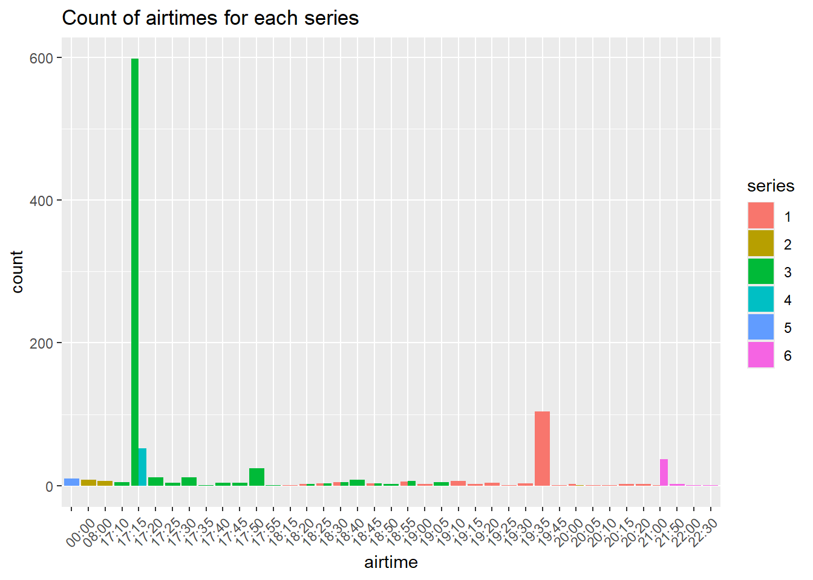

You can see the purpose of this assignment as well as the skills and knowledge you should be using and acquiring, in the Transparency in Learning and Teaching (TILT) document in this repository. The TILT document also contains a checklist for self-reflection that will provide some guidance on how the assignment will be graded.
1 Data Source
JSON data files for this assignment were obtained from the TVMaze API for three different Doctor Who series as well as two different spin-offs.
For this portion of the assignment, only work with the canonical Dr. Who files (drwho2023.json, drwho2005.json, drwho1963.json).
2.1 Parse the file
Add a code chunk that will read each of the JSON files in. Store the data in a drwhoYYYY object, where YYYY is the first year the series began to air. How are the data objects stored?
library(tibble)library(dplyr)
Attaching package: 'dplyr'
The following objects are masked from 'package:stats':
filter, lag
The following objects are masked from 'package:base':
intersect, setdiff, setequal, union
library(tidyr)library(purrr)library(jsonlite)
Attaching package: 'jsonlite'
The following object is masked from 'package:purrr':
flatten
Create a nested markdown list showing what variables are nested at each level of the JSON file. Include an ‘episode’ object that is a stand-in for a generic episode (e.g. don’t create a list with all 700+ episodes in it, just show what a single episode has). Make sure you use proper markdown formatting to ensure that the lists are rendered properly when you compile your document.
Hint: The prettify() function in the R package jsonlite will spit out a better-formatted version of a JSON file.
Is there any information stored in the list structure that you feel is redundant? If so, why?
I feel that air date and air time are a subset of air stamp so we only need air stamp. I also feel that the link list structure is a bit complicated for no reason and it could be simplified as there is nothing stored in the section links shelf or show.
2.3 Develop A Strategy
Consider what information you would need to examine the structure of Dr. Who episodes over time (show runtime, season length, specials) as well as the ratings, combining information across all three data files.
Sketch one or more rectangular data tables that look like your expected output. Remember that if you link to an image, you must link to something with a picture extension (.png, .jpg), and if you reference a file it should be using a local path and you must also add the picture to your git repository.
Sketch for tidy data formation
What operations will you need to perform to get the data into a form matching your sketch? Make an ordered list of steps you need to take.
read in json as a date frame with fromJson
create a series variable and check for duplicates
row bind the three data frames
select columns need for show analysis
un nest the rating variable
2.4 Implement Your Strategy
Add a code chunk that will convert the JSON files into the table(s) you sketched above. Make sure that the resulting tables have the correct variable types (e.g., dates should not be stored as character variables).
Print out the first 5 rows of each table that you create (but no more)!
library(jsonlite)library(tidyverse)
── Attaching core tidyverse packages ──────────────────────── tidyverse 2.0.0 ──
✔ forcats 1.0.0 ✔ readr 2.1.5
✔ ggplot2 3.5.2 ✔ stringr 1.5.2
✔ lubridate 1.9.4
── Conflicts ────────────────────────────────────────── tidyverse_conflicts() ──
✖ dplyr::filter() masks stats::filter()
✖ jsonlite::flatten() masks purrr::flatten()
✖ dplyr::lag() masks stats::lag()
ℹ Use the conflicted package (<http://conflicted.r-lib.org/>) to force all conflicts to become errors
Visually represent the length of time between air dates of adjacent episodes within the same season, across all seasons of Dr. Who. You may need to create a factor to indicate which Dr. Who series is indicated, as there will be a Season 1 for each of the series. Your plot must have appropriate labels and a title.
library(lubridate)total_date <- total_show_info %>%group_by(season,series)%>%mutate(date =as.Date(airdate)) %>%mutate(date_diff = date -lag(date)) %>%filter(!is.na(date_diff))library(ggplot2)total_date %>%filter(series ==1& season ==1) %>%ggplot(aes(x = number,y =factor(date_diff),group =factor(series),color =factor(date_diff))) +geom_point() +geom_line() +labs(title ="Date Difference in Episodes in season 1 of series 1",x ="episode number",y ="days between episodes",color ="difference in days of episode relase" )
total_date %>%filter(series ==1) %>%ggplot(aes(x =factor(season),y =factor(date_diff),fill =factor(date_diff))) +geom_bar(position ="dodge",stat ="identity") +labs(title ="Occurances of Date Difference in Episodes in Series 1",x ="season",y ="days between episodes",fill ="episode relase difference" )
total_date %>%filter(series ==2) %>%ggplot(aes(x =factor(season),y =factor(date_diff),fill =factor(date_diff))) +geom_bar(position ="dodge",stat ="identity") +labs(title ="Occurances of Date Difference in Episodes in Series 2",x ="season",y ="days between episodes",fill ="episode relase difference" )
total_date %>%filter(series ==3) %>%ggplot(aes(x =factor(season),y =factor(date_diff),fill =factor(date_diff))) +geom_bar(position ="dodge",stat ="identity") +labs(title ="Occurances of Date Difference in Episodes in Series 3",x ="season",y ="days between episodes",fill ="episode relase difference" )
total_date %>%ggplot(aes(x =factor(season),y =factor(date_diff),fill =factor(date_diff))) +geom_bar(position ="dodge",stat ="identity") +facet_grid(~series) +labs(title ="Occurances of Date Difference in Episodes Across Series",x ="season",y ="days between episodes",fill ="episode relase difference" )
In 2-3 sentences, explain what conclusions you might draw from the data. What patterns do you notice? Are there data quality issues?
I can conclude that most of the episodes are released in a weekly pattern across all series with few exceptions. One of the episodes was released 182 days after the previous episode in series 2 season 7. There could be a data quality issue there.
3 Timey-Wimey Series and Episodes
3.1 Setting Up
In this section of the assignment, you will work with all of the provided JSON files. Use a functional programming approach to read in all of the files and bind them together.
time_1 <-fromJSON("torchwood-659.json")time_2 <-fromJSON("torchwood-26694.json")files <-list.files(pattern ="\\.json$", recursive =TRUE)series_form <-data.frame(files)read_timey <-function(x){library(jsonlite)library(dplyr)library(purrr) data_list <-map2(x, seq_along(x), ~ { df <-fromJSON(.x) df$series <- .y # .y is the current index df}) data_combined <-bind_rows(data_list)return(data_combined) }combined_show <-read_timey(files)head(combined_show)
id
1 13857
2 13858
3 13859
4 13860
5 13861
6 13862
url
1 https://www.tvmaze.com/episodes/13857/doctor-who-1x01-rose
2 https://www.tvmaze.com/episodes/13858/doctor-who-1x02-the-end-of-the-world
3 https://www.tvmaze.com/episodes/13859/doctor-who-1x03-the-unquiet-dead
4 https://www.tvmaze.com/episodes/13860/doctor-who-1x04-aliens-of-london
5 https://www.tvmaze.com/episodes/13861/doctor-who-1x05-world-war-three
6 https://www.tvmaze.com/episodes/13862/doctor-who-1x06-dalek
name season number type airdate airtime
1 Rose 1 1 regular 2005-03-26 19:35
2 The End of the World 1 2 regular 2005-04-02 19:35
3 The Unquiet Dead 1 3 regular 2005-04-09 19:35
4 Aliens of London 1 4 regular 2005-04-16 19:35
5 World War Three 1 5 regular 2005-04-23 19:35
6 Dalek 1 6 regular 2005-04-30 19:35
airstamp runtime average
1 2005-03-26T19:35:00+00:00 45 7.5
2 2005-04-02T18:35:00+00:00 45 7.3
3 2005-04-09T18:35:00+00:00 45 7.2
4 2005-04-16T18:35:00+00:00 45 7.0
5 2005-04-23T18:35:00+00:00 45 7.1
6 2005-04-30T18:35:00+00:00 45 7.5
image.medium
1 https://static.tvmaze.com/uploads/images/medium_landscape/120/302096.jpg
2 https://static.tvmaze.com/uploads/images/medium_landscape/14/36862.jpg
3 https://static.tvmaze.com/uploads/images/medium_landscape/14/36861.jpg
4 https://static.tvmaze.com/uploads/images/medium_landscape/14/36860.jpg
5 https://static.tvmaze.com/uploads/images/medium_landscape/120/302496.jpg
6 https://static.tvmaze.com/uploads/images/medium_landscape/14/36858.jpg
image.original
1 https://static.tvmaze.com/uploads/images/original_untouched/120/302096.jpg
2 https://static.tvmaze.com/uploads/images/original_untouched/14/36862.jpg
3 https://static.tvmaze.com/uploads/images/original_untouched/14/36861.jpg
4 https://static.tvmaze.com/uploads/images/original_untouched/14/36860.jpg
5 https://static.tvmaze.com/uploads/images/original_untouched/120/302496.jpg
6 https://static.tvmaze.com/uploads/images/original_untouched/14/36858.jpg
summary
1 <p>Rose Tyler meets a mysterious stranger called the Doctor, and realises Earth is in danger.</p>
2 <p>The Doctor takes Rose on her first voyage through time, to the year five billion and the end of planet Earth.</p>
3 <p>Charles Dickens and the Doctor team up as corpses stalk the streets of Victorian Cardiff.</p>
4 <p>Rose is taken home, but a spaceship crashes in the Thames and London is closed off... Enter the Slitheen!</p>
5 <p>Time is running out for the Doctor as Downing Street announces mankind's first Interplanetary War.</p>
6 <p>The Doctor is shattered and Earth is in danger as he and Rose discover the Time Lords' deadliest enemy beneath Utah.</p>
_links.href _links.show.href
1 https://api.tvmaze.com/episodes/13857 https://api.tvmaze.com/shows/210
2 https://api.tvmaze.com/episodes/13858 https://api.tvmaze.com/shows/210
3 https://api.tvmaze.com/episodes/13859 https://api.tvmaze.com/shows/210
4 https://api.tvmaze.com/episodes/13860 https://api.tvmaze.com/shows/210
5 https://api.tvmaze.com/episodes/13861 https://api.tvmaze.com/shows/210
6 https://api.tvmaze.com/episodes/13862 https://api.tvmaze.com/shows/210
_links.show.name series
1 Doctor Who 1
2 Doctor Who 1
3 Doctor Who 1
4 Doctor Who 1
5 Doctor Who 1
6 Doctor Who 1
Then, use the processing code you wrote for the previous section to perform appropriate data cleaning steps. At the end of the chunk, your data should be in a reasonably tidy, rectangular form with appropriate data types. Call this rectangular table whoverse.
rowws_df [972 × 18] (S3: rowwise_df/tbl_df/tbl/data.frame)
$ id : int [1:972] 13857 13858 13859 13860 13861 13862 13863 13864 13865 13866 ...
$ url : chr [1:972] "https://www.tvmaze.com/episodes/13857/doctor-who-1x01-rose" "https://www.tvmaze.com/episodes/13858/doctor-who-1x02-the-end-of-the-world" "https://www.tvmaze.com/episodes/13859/doctor-who-1x03-the-unquiet-dead" "https://www.tvmaze.com/episodes/13860/doctor-who-1x04-aliens-of-london" ...
$ name : chr [1:972] "Rose" "The End of the World" "The Unquiet Dead" "Aliens of London" ...
$ season : int [1:972] 1 1 1 1 1 1 1 1 1 1 ...
$ number : int [1:972] 1 2 3 4 5 6 7 8 9 10 ...
$ type : chr [1:972] "regular" "regular" "regular" "regular" ...
$ airdate : chr [1:972] "2005-03-26" "2005-04-02" "2005-04-09" "2005-04-16" ...
$ airtime : chr [1:972] "19:35" "19:35" "19:35" "19:35" ...
$ airstamp : chr [1:972] "2005-03-26T19:35:00+00:00" "2005-04-02T18:35:00+00:00" "2005-04-09T18:35:00+00:00" "2005-04-16T18:35:00+00:00" ...
$ runtime : int [1:972] 45 45 45 45 45 45 45 45 45 45 ...
$ average : num [1:972] 7.5 7.3 7.2 7 7.1 7.5 7.6 7.8 8.2 8.4 ...
$ medium : chr [1:972] "https://static.tvmaze.com/uploads/images/medium_landscape/120/302096.jpg" "https://static.tvmaze.com/uploads/images/medium_landscape/14/36862.jpg" "https://static.tvmaze.com/uploads/images/medium_landscape/14/36861.jpg" "https://static.tvmaze.com/uploads/images/medium_landscape/14/36860.jpg" ...
$ original : chr [1:972] "https://static.tvmaze.com/uploads/images/original_untouched/120/302096.jpg" "https://static.tvmaze.com/uploads/images/original_untouched/14/36862.jpg" "https://static.tvmaze.com/uploads/images/original_untouched/14/36861.jpg" "https://static.tvmaze.com/uploads/images/original_untouched/14/36860.jpg" ...
$ self_href : chr [1:972] "https://api.tvmaze.com/episodes/13857" "https://api.tvmaze.com/episodes/13858" "https://api.tvmaze.com/episodes/13859" "https://api.tvmaze.com/episodes/13860" ...
$ show_href : chr [1:972] "https://api.tvmaze.com/shows/210" "https://api.tvmaze.com/shows/210" "https://api.tvmaze.com/shows/210" "https://api.tvmaze.com/shows/210" ...
$ show_name : chr [1:972] "Doctor Who" "Doctor Who" "Doctor Who" "Doctor Who" ...
$ series : int [1:972] 1 1 1 1 1 1 1 1 1 1 ...
$ summ_clean: chr [1:972] "Rose Tyler meets a mysterious stranger called the Doctor, and realises Earth is in danger." "The Doctor takes Rose on her first voyage through time, to the year five billion and the end of planet Earth." "Charles Dickens and the Doctor team up as corpses stalk the streets of Victorian Cardiff." "Rose is taken home, but a spaceship crashes in the Thames and London is closed off... Enter the Slitheen!" ...
- attr(*, "groups")= tibble [972 × 1] (S3: tbl_df/tbl/data.frame)
..$ .rows: list<int> [1:972]
.. ..$ : int 1
.. ..$ : int 2
.. ..$ : int 3
.. ..$ : int 4
.. ..$ : int 5
.. ..$ : int 6
.. ..$ : int 7
.. ..$ : int 8
.. ..$ : int 9
.. ..$ : int 10
.. ..$ : int 11
.. ..$ : int 12
.. ..$ : int 13
.. ..$ : int 14
.. ..$ : int 15
.. ..$ : int 16
.. ..$ : int 17
.. ..$ : int 18
.. ..$ : int 19
.. ..$ : int 20
.. ..$ : int 21
.. ..$ : int 22
.. ..$ : int 23
.. ..$ : int 24
.. ..$ : int 25
.. ..$ : int 26
.. ..$ : int 27
.. ..$ : int 28
.. ..$ : int 29
.. ..$ : int 30
.. ..$ : int 31
.. ..$ : int 32
.. ..$ : int 33
.. ..$ : int 34
.. ..$ : int 35
.. ..$ : int 36
.. ..$ : int 37
.. ..$ : int 38
.. ..$ : int 39
.. ..$ : int 40
.. ..$ : int 41
.. ..$ : int 42
.. ..$ : int 43
.. ..$ : int 44
.. ..$ : int 45
.. ..$ : int 46
.. ..$ : int 47
.. ..$ : int 48
.. ..$ : int 49
.. ..$ : int 50
.. ..$ : int 51
.. ..$ : int 52
.. ..$ : int 53
.. ..$ : int 54
.. ..$ : int 55
.. ..$ : int 56
.. ..$ : int 57
.. ..$ : int 58
.. ..$ : int 59
.. ..$ : int 60
.. ..$ : int 61
.. ..$ : int 62
.. ..$ : int 63
.. ..$ : int 64
.. ..$ : int 65
.. ..$ : int 66
.. ..$ : int 67
.. ..$ : int 68
.. ..$ : int 69
.. ..$ : int 70
.. ..$ : int 71
.. ..$ : int 72
.. ..$ : int 73
.. ..$ : int 74
.. ..$ : int 75
.. ..$ : int 76
.. ..$ : int 77
.. ..$ : int 78
.. ..$ : int 79
.. ..$ : int 80
.. ..$ : int 81
.. ..$ : int 82
.. ..$ : int 83
.. ..$ : int 84
.. ..$ : int 85
.. ..$ : int 86
.. ..$ : int 87
.. ..$ : int 88
.. ..$ : int 89
.. ..$ : int 90
.. ..$ : int 91
.. ..$ : int 92
.. ..$ : int 93
.. ..$ : int 94
.. ..$ : int 95
.. ..$ : int 96
.. ..$ : int 97
.. ..$ : int 98
.. ..$ : int 99
.. .. [list output truncated]
.. ..@ ptype: int(0)
head(whoverse,5)
# A tibble: 5 × 18
# Rowwise:
id url name season number type airdate airtime airstamp runtime average
<int> <chr> <chr> <int> <int> <chr> <chr> <chr> <chr> <int> <dbl>
1 13857 http… Rose 1 1 regu… 2005-0… 19:35 2005-03… 45 7.5
2 13858 http… The … 1 2 regu… 2005-0… 19:35 2005-04… 45 7.3
3 13859 http… The … 1 3 regu… 2005-0… 19:35 2005-04… 45 7.2
4 13860 http… Alie… 1 4 regu… 2005-0… 19:35 2005-04… 45 7
5 13861 http… Worl… 1 5 regu… 2005-0… 19:35 2005-04… 45 7.1
# ℹ 7 more variables: medium <chr>, original <chr>, self_href <chr>,
# show_href <chr>, show_name <chr>, series <int>, summ_clean <chr>
3.2 Air Time
Investigate the air time of the episodes relative to the air date, series, and season. It may help to know that the watershed period in the UK is 9:00pm - 5:30am. Content that is unsuitable for minors may only be shown during this window. What conclusions do you draw about the target audience for each show?
How can you explain any shows in the Dr. Who universe which do not have airtimes provided?
Warning: Returning more (or less) than 1 row per `summarise()` group was deprecated in
dplyr 1.1.0.
ℹ Please use `reframe()` instead.
ℹ When switching from `summarise()` to `reframe()`, remember that `reframe()`
always returns an ungrouped data frame and adjust accordingly.
`summarise()` has grouped output by 'series', 'season'. You can override using
the `.groups` argument.
library(ggplot2)diff_air <- airtime %>%group_by(series) %>%count(airtime) %>%ggplot(aes(x =factor(airtime), y = n, fill =factor(series))) +geom_bar(position ="dodge", stat ="identity") +labs(title ="Count of airtimes for each series",x ="airtime",y ="count",fill ="series" ) +theme(axis.text.x =element_text(angle =45, hjust =1))diff_air

It can clearly be show that the air time for the thee main Dr. Who series (1 - 3) are the prime time slot. The Sarah Jane show is exclusively at 5:15 and the more inappropriate series (6) is shown in the watershed window. This all makes sense with the information that we know about each show! We also see that we have series 5 which has no airtime, this is due to the fact that this was a special series and had a longer run time.
3.3 Another Layer of JSON
Use the show URL (_links > show > href) to read in the JSON file for each show. As with scraping, it is important to be polite and not make unnecessary server calls, so pre-process the data to ensure that you only make one server call for each show. You should use a functional programming approach when reading in these files.
# A tibble: 5 × 42
id url name type language genres1 genres2 genres3 status averageRuntime
<chr> <chr> <chr> <chr> <chr> <chr> <chr> <chr> <chr> <chr>
1 210 http… Doct… Scri… English Drama Advent… Scienc… Ended 48
2 72724 http… Doct… Scri… English Drama Advent… Scienc… To Be… 48
3 766 http… Doct… Scri… English Action Advent… Scienc… Ended 25
4 970 http… The … Scri… English Action Advent… Scienc… Ended 30
5 26694 http… Torc… Anim… English Drama Scienc… <NA> Ended 3
# ℹ 32 more variables: premiered <chr>, ended <chr>, officialSite <chr>,
# schedule.time <chr>, schedule.days <chr>, rating.average <chr>,
# weight <chr>, network.id <chr>, network.name <chr>,
# network.country.name <chr>, network.country.code <chr>,
# network.country.timezone <chr>, network.officialSite <chr>,
# externals.tvrage <chr>, externals.thetvdb <chr>, externals.imdb <chr>,
# image.medium <chr>, image.original <chr>, summary <chr>, updated <chr>, …
What keys would you use to join this data with the whoverse episode level data? Explain.
The keys that I would use to combine this with the who verse data would be series wide information. This is because this data is for each series as a whole. What we could do is give each of the series a new id based on the ids for the episode data. We then can use this id to join the who verse data and the episode data.
3.4 Explore!
Use the data you’ve assembled to answer a question you find interesting about this data. Any graphics you make should have appropriate titles and axis labels. Tables should be reasonably concise (e.g. don’t show all 900 episodes in a table), generated in a reproducible fashion, and formatted with markdown. Any results (graphics, tables, models) should be explained with at least 2-3 sentences.
If you’re stuck, consider examining the frequency of words in the episode descriptions across different series or seasons. Or, look at the episode guest cast by appending /guestcast/ to the episode URL and see whether there are common guests across different seasons.
I would like to look deeper into series and season information and if anything interesting can be parsed out.
Code goes here – once you output a result, you should explain it using markdown text, and then start a new code chunk to continue your exploration.
`summarise()` has grouped output by 'series'. You can override using the
`.groups` argument.
season_dat <- season_series %>%mutate(date =as.Date(date,format ="%Y-%m-%d")) %>%group_by(series) %>%ggplot(aes(x = season, y = avg_rating, color =factor(series)))+geom_point() +geom_line() +ylim(0,10) +labs(title ="Average rating across seasons",x ="season",y ="average rating",color ="Series" )season_dat
season_date <- season_series %>%mutate(date =as.Date(date,format ="%Y-%m-%d")) %>%group_by(series) %>%ggplot(aes(x = date, y = avg_rating, color =factor(series)))+geom_point() +geom_line() +ylim(0,10) +labs(title ="Average rating across date",x ="season",y ="average rating",fill ="series" )season_date
Both of these graphs show similar information in which comparing the average rating across date and season. I think from these graphs we can reason that we have a fairly consistent rating for all of these series, but the best ratings overall belong to series 3 which is the 1963 Dr. Who Show.
season_rating <- whoverse %>%filter(season ==1) %>%ggplot(aes(x = number, y = average, color =factor(series))) +geom_point() +geom_line() +ylim(0,10) +labs(title ="Average rating across season 1",x ="episode",y ="average rating",fill ="series" )season_rating
In the graph above we have average rating for each episode in season 1 across all series. It can be seen that the major outline in this case is the timey whimey (touchwood) special series or series 5. This series has much lower rating for season 1 than the rest of the who verse.
first_time <- whoverse %>%filter(series ==6) %>%mutate(airdates =as.Date(airdate,format ="%Y-%m-%d")) %>%ggplot(aes(x = airdates,y = average, color =factor(season), group = season)) +geom_point() +geom_line() +ylim(0,9) +labs(title ="Average rating across series 6 (Timey_whimy)",x ="date",y ="average rating",color ="season" )first_time
Here we have the ratings for each episode of the the touchwood timey whimey show across all 4 seasons and over date. This allows us to see that overall the ratings are very similar for each season of this show which hovers around a 7.5, with season 3 being the highest rating.
episode_data %>%ggplot(aes(x =as.numeric(averageRuntime), y =as.numeric(rating.average), )) +geom_point() +geom_line() +ylim(0,10) +labs(title ="Average runtime vs average rating across series",x ="average runtime",y ="average rating" )
In the graph above it is comparing the average run time for each series vs the average rating. This allows us to see that we don’t really have a relationship in the average run time and rating, especially because they all have very similar ratings with the lowest being series 5 or the touchwood speical.